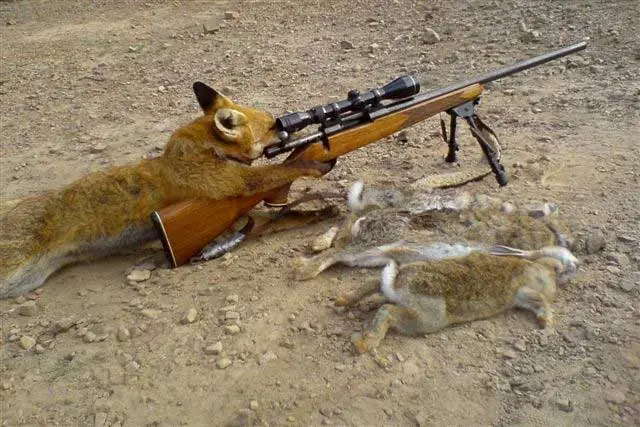

Vyhodnocení

Lišky jsou skutečně úžasná zvířata a mají mnoho vlastností a schopností, které je činí výjimečnými. Zde je několik důvodů, proč jsou lišky tak úžasné:
Přizpůsobivost:
Lišky jsou mimořádně přizpůsobivé zvířata, která dokážou žít v různých prostředích po celém světě. Lišky jsou schopné adaptovat se na různé typy krajiny, včetně lesů, pouští, polárních oblastí a předměstských prostředí.
Inteligence:
Lišky jsou považovány za chytrá zvířata. Mají vysokou úroveň učení a jsou schopné vyřešit různé problémy a situace. Lišky jsou kreativní a mají schopnost adaptovat své chování a strategie lovu podle konkrétních podmínek.
Schopnost přežití:
Lišky mají různé přizpůsobení, které jim pomáhá přežít ve svém prostředí. Mají vynikající smysly, jako je skvělý sluch a čich, které jim umožňují najít potravu a vyhýbat se nebezpečí. Lišky jsou také rychlé a obratné, což jim pomáhá při lovu a úniku před predátory.
Sociální struktura:
Lišky mají zajímavou sociální strukturu. Některé druhy lišek, jako je liška lesní, žijí ve smečkách a mají složitou hierarchii. Lišky mají schopnost komunikovat pomocí různých zvuků a gest.
Estetická přitažlivost:
Lišky jsou krásná zvířata se svými pestrými srstmi a expresivními obličeji. Jejich štíhlá těla a elegantní pohyb je obdivuhodný.
Ekologický význam:
Lišky hrají důležitou roli v ekosystémech, ve kterých žijí. Pomáhají udržovat populace škůdců, jako jsou hlodavci, a mohou také pomoci šířit semena rostlin.
Závěr
Lišky jsou jedinečná zvířata, která vyvolávají zájem a obdiv lidí po celém světě. Jejich adaptabilita, inteligence a schopnost přežití je fascinující a stojí za to studovat a chránit tato úžasná stvoření.